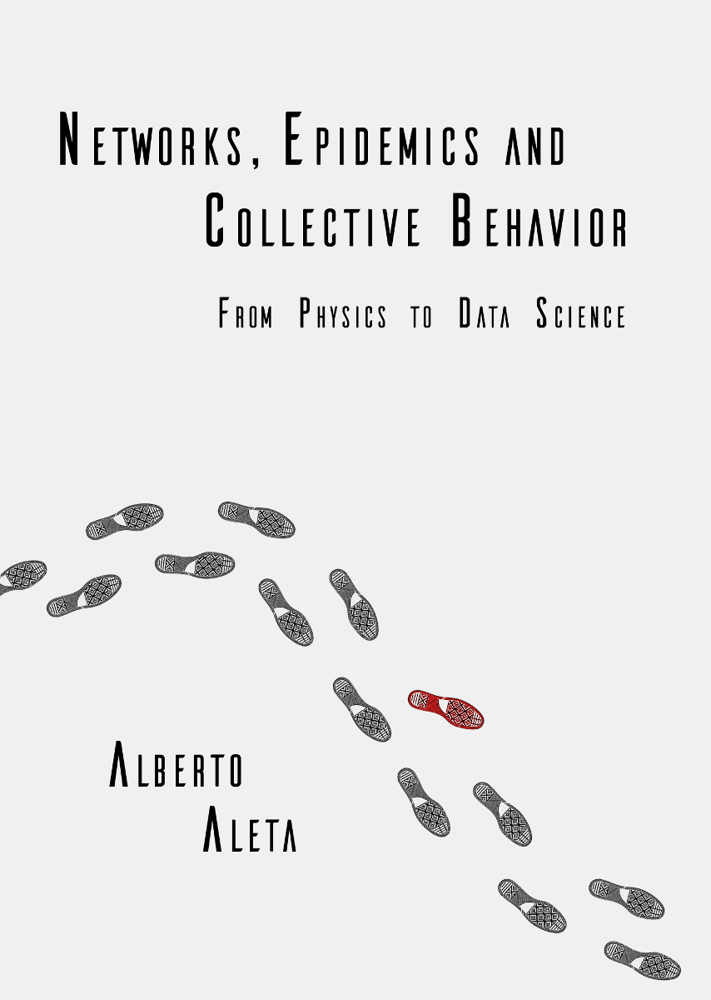

Networks, Epidemics and Collective Behavior: from Physics to Data Science
2020-09-22
Preface

This is the bookdown version of my thesis, which I defended on 18-12-2019 at the University of Zaragoza. You can download the pdf version from the University’s website following this link.
If you like it, find any errors, or just want to chat a little bit, feel free to send me an email to albertoaleta@gmail.com
And if you find it helpful for your research, you can cite it using this reference (although I recommend going to the versions published in scientific journals, since some works were not completely finished by the time I wrote the thesis!):
Aleta, A. , (2019) Networks, Epidemics and Collective Behavior: from Physics to Data Science [Doctoral thesis, University of Zaragoza]. https://zaguan.unizar.es/record/89307
Or this bibtex entry:
@phdthesis{AletaThesis2019,
author = {Alberto Aleta},
title = {Networks, Epidemics and Collective Behavior: from Physics to Data Science},
school = {University of Zaragoza},
year = 2019,
note = {https://zaguan.unizar.es/record/89307}
}P.S: I have uploaded the scripts I used to create all the plots to my github’s page, check it out!